Selected Projects and Coursework.
About Me
Hello! I'm Felix Wang. I am a passionate creator focused on building devices and electronics that can positively help improve our world. My current interests are in the intersection between sustainability and hardware electronics. In my free time, I love to play pickleball and do stargazing!
Avatar Robotics
Robotics Engineer · Jun 2026 – PresentBuilt internal fleet tooling and supported on-site deployment of warehouse picking robots, working across web software, on-robot debugging, fixture design, and floor operations.
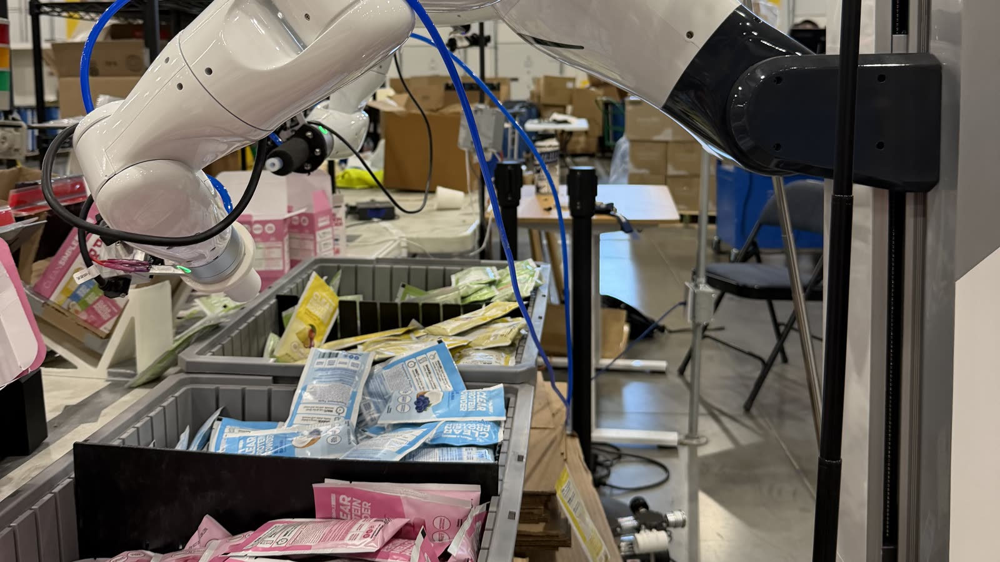
Fleet Software
Robot uptime tracking
Bug fixes for arm crashes and network drops had no way of showing whether they improved uptime. I built downtime logging and powered vs. operational uptime reporting, now live on every production run.
Full-stack · Data modeling · Metrics design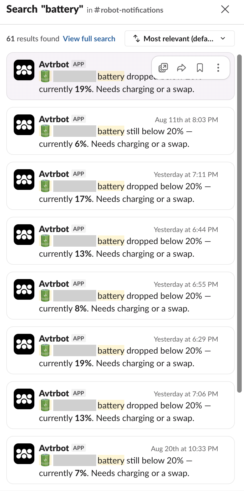
Low-battery alerts
Replaced manual dashboard checks with automatic Slack alerts whenever a robot drops below 20%, so the team gets notified asynchronously.
Slack integration · Event-driven alerting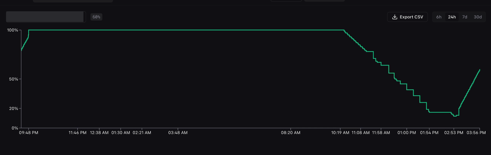
Battery history & CSV export
Per-robot battery time series (6h to 30d) with one-click CSV export, live in the fleet dashboard's device logs.
Time-series visualization · Data export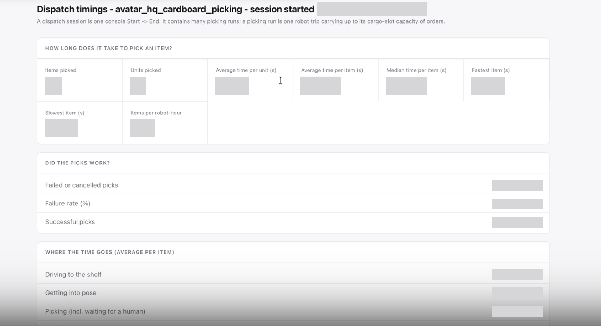
Dispatch timing analytics
Exportable summaries per session, order, and stage (driving, posing, picking) to measure where picking time actually goes.
Analytics · Reporting · Spreadsheet export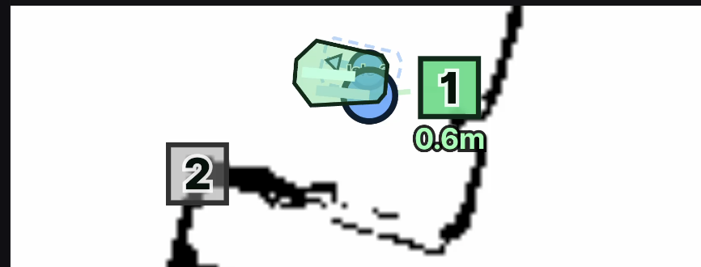
Navigation map: robot footprint
Drew the robot to scale with its heading and waypoint distances so operators can judge size and position. Also stopped the map from auto-expanding over the controls.
Front-end · Robotics UX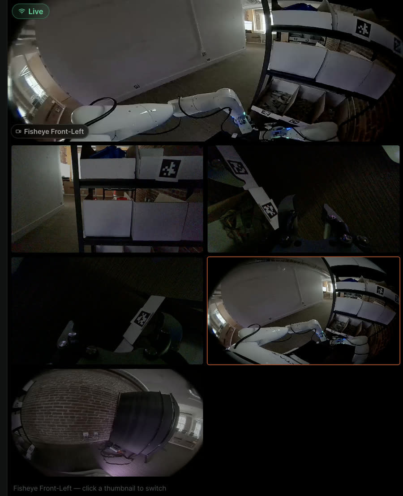
Fisheye camera recovery
SSH'd into the robot and probed its unlabeled camera devices (with AI assistance) to find the right fisheye, then routed it through a filter pipeline to clean up the feed.
Linux / SSH · Camera pipelines · DebuggingDeployment & Hardware
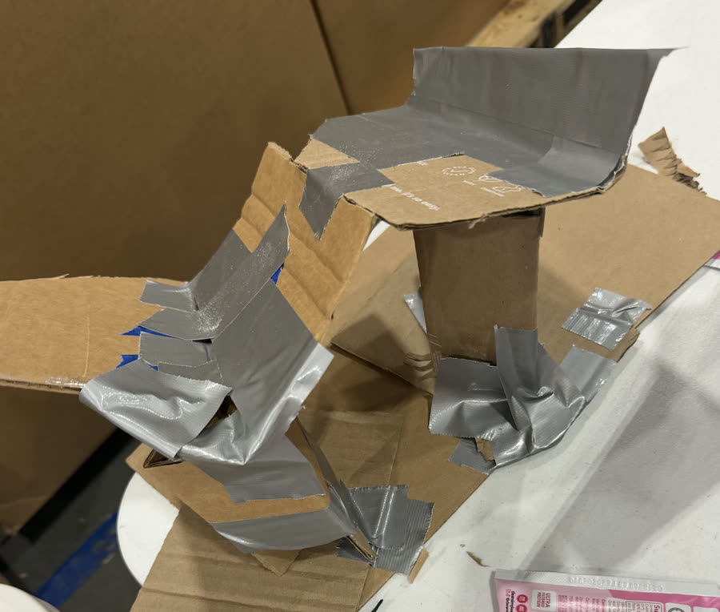
Kitting funnel & printed parts
Built a funnel to orient packets during kitting, and iterated 3D-printed wedges by tuning wall count, infill, and material (PLA vs. TPU 95A).
Rapid prototyping · 3D printing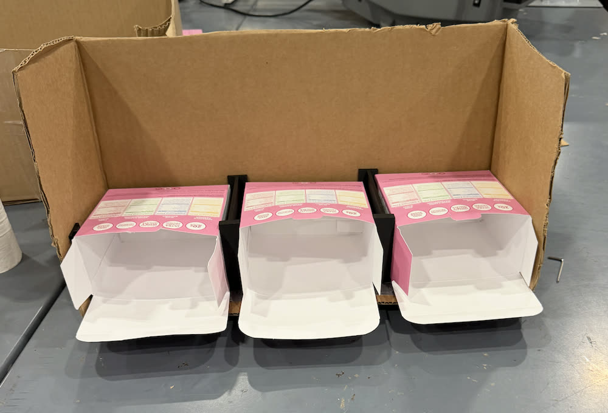
Fixtures for kitting & sorting
Supported CAD for box-enlarging fixtures, and built cardboard fixtures that stopped boxes from falling during sorting.
CAD · Fixture design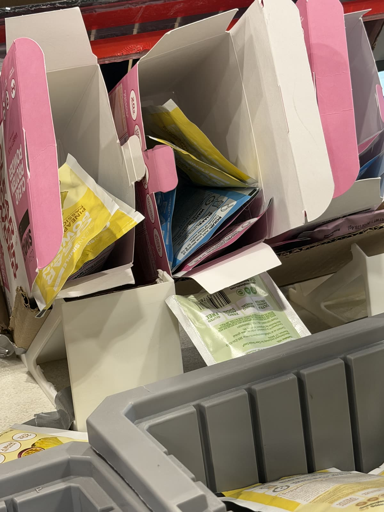
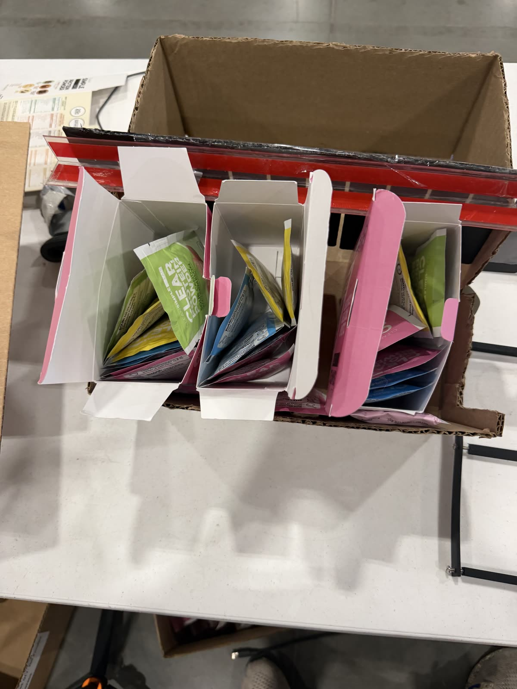
On-site trials & failure analysis
Led on-site kitting trials and logged boxes per hour. Tallied failure cases from trial video and coached fixes for box damage and packets not settling flat.
Test design · Failure analysisField operations & maintenance
Ran weekend sorting shifts (1–10 pm) for about 3 weeks. Opened up a robot's chassis to replace its wrist camera, added remote power-cycling switches, and took down site networking when a deployment ended.
Operations · Hardware maintenanceCustomer, robot, and run identifiers, plus performance figures, are redacted.
← Back to ProjectsNasal Cannula Detection Device
Healthcare & Embedded Systems · Aug 2025 – Feb 2026A ~$30 Arduino device that detects when an infant's nasal cannula slips out and alerts nurses, built for wards like Mulago National Referral Hospital in Uganda, where one nurse may cover up to 35 babies.
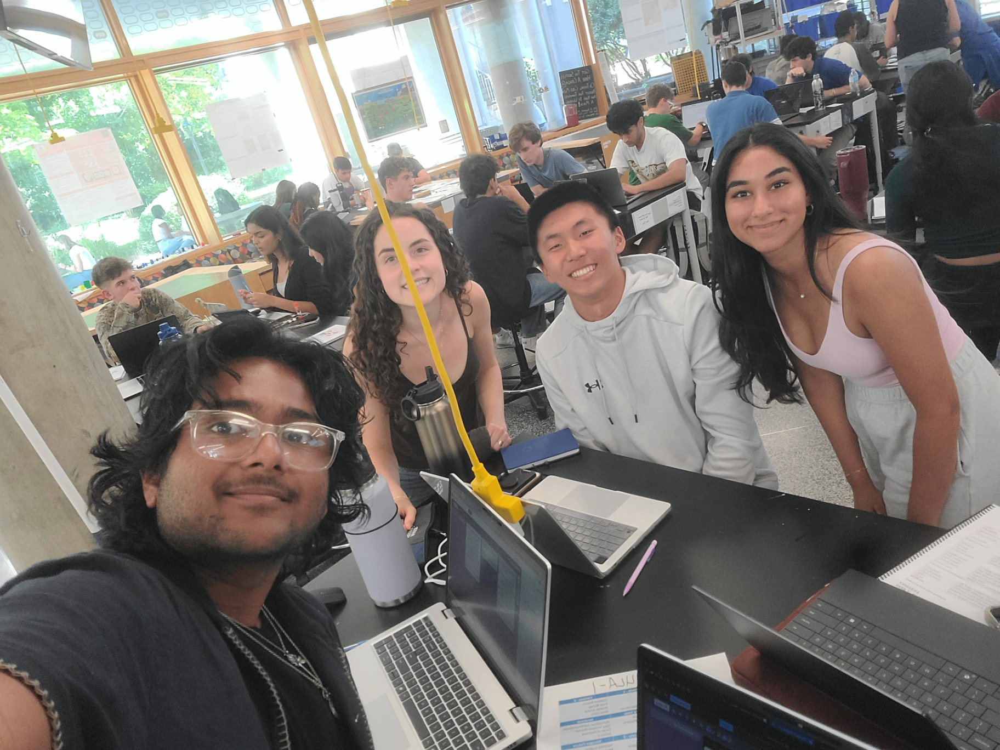
How It Works
- Sensing: A thermistor at the nose samples every 500 ms against a baseline set during a 5-second calibration.
- Detection: The alarm fires only after 10 consecutive readings below 99.5% of baseline, which filters out false alarms.
- Hardware: A 3D-printed housing holds the circuit, battery, 16×2 LCD, reset buttons, and status LEDs for power, calibration, and dislodgement.
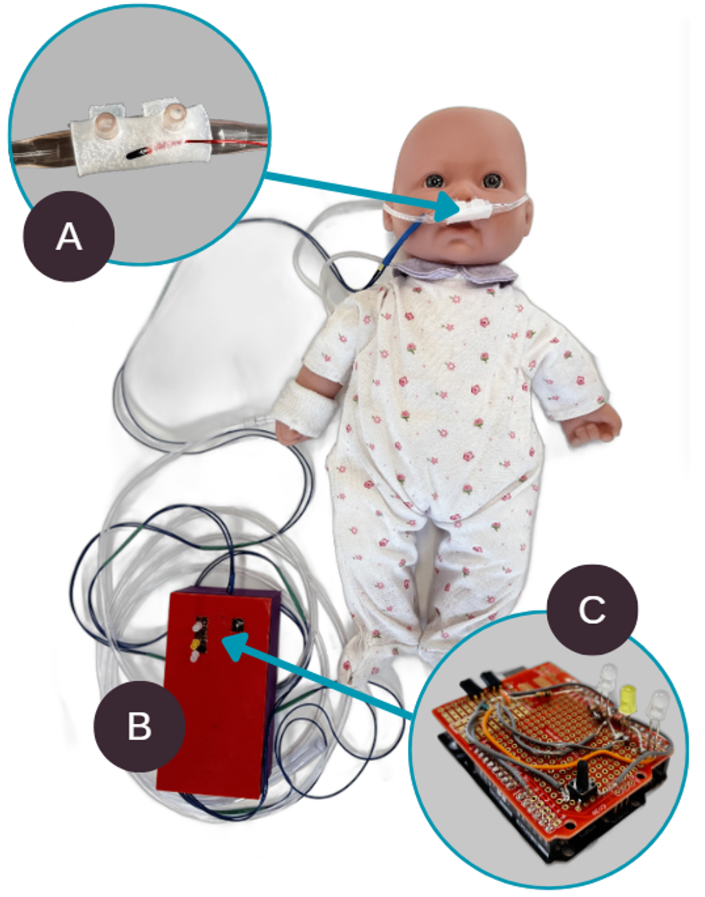
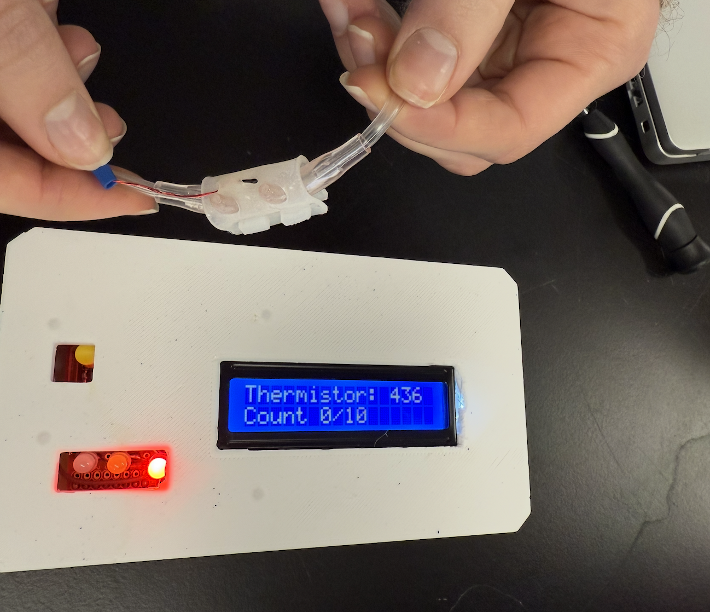
Results
- 100% true positives across 60 trials
- 17.29 s average time to alert
- 21.86 s average attachment time
- Disassembled 50+ times with no structural wear
Demo
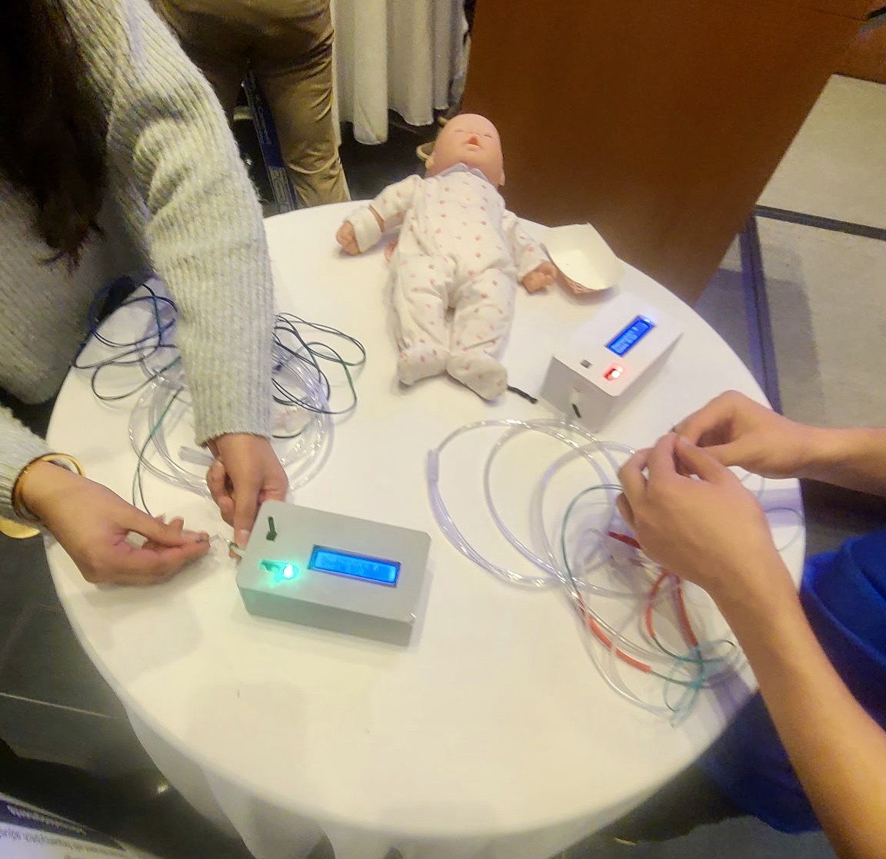
Exoplanet Detection & Habitable Zone Analysis
Astrophysics & Data Science ResearchUsed TESS transit photometry from the MAST archive to detect exoplanets and test whether they fall within their star's habitable zone.
Methodology
- Transit photometry: Detected brightness dips as planets cross their star.
- Light curves: Processed and normalized TESS pixel files with
Lightkurve. - Periodograms: Found orbital periods with Box Least Squares (BLS).
- Habitable zones: Computed from stellar mass–luminosity relations with
Astropy. - False positives: Screened with centroid tracking, background flux, and eclipsing-binary checks.
Key Findings
- Of 2,537 documented exoplanets, only 118 (4.7%) lie within habitable zones.
- Most discovered exoplanets orbit very close to their host stars.
- Flagged
TIC 34798133as a promising candidate for follow-up.
Full Research Paper
← Back to ProjectsFOAK Fungal-Detection Device (MycoSpec)
Medical Hardware & Embedded Diagnostics · Nov 2025 – PresentA clip-on HVAC sensor that tracks VOCs, temperature, and humidity to flag Aspergillus mold risk for immunocompromised patients before growth is visible.
Full engineering documentation →
Why It Matters
HVAC systems are warm, humid, and dark, which is ideal for mold. For transplant and chemotherapy patients, inhaled Aspergillus spores can cause invasive aspergillosis, which kills more than 50% of those infected. MycoSpec clips onto standard vent fins with no tools or downtime.
Testing & Results
- Logged ~350 s of sensor data alongside live Aspergillus fumigatus cultures in the lab.
- Found distinct VOC bands separating the negative (no mold) and positive controls.
- Turned those bands into LOW / MEDIUM / HIGH risk thresholds on a live dashboard.
Key Challenges
- Specificity: Separating mold VOCs from cleaning agents, occupant activity, and off-gassing materials.
- Species: Telling species such as Aspergillus and Stachybotrys apart by their VOC signatures.